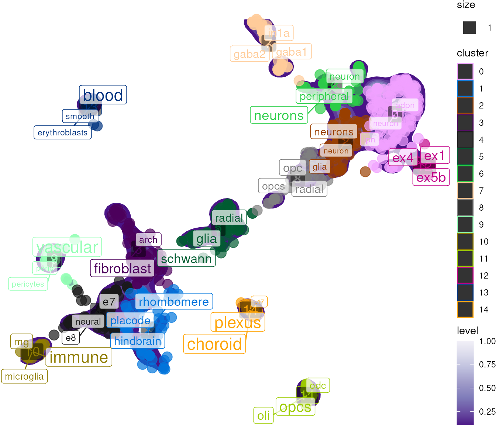
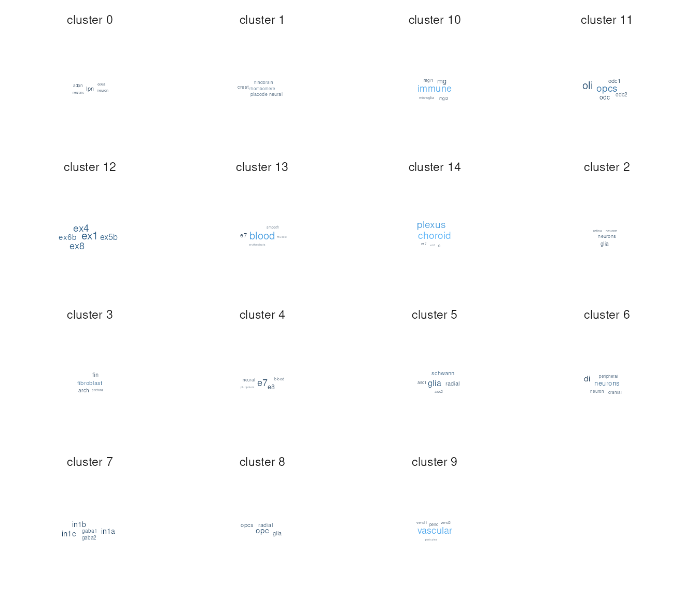

vignettes/scNLP.Rmd
scNLP.RmdscNLP is an R package for applying Natural Language
Processing (NLP) techniques to single-cell omics data. The primary use
case is harmonizing non-standardized cell-type labels across
datasets.
When integrating single-cell datasets from multiple sources,
cell-type annotations are often inconsistent. Different labs may use
different naming conventions for the same cell types (e.g., “Purkinje
neurons” vs “Purkinje cells” vs “PCs”). scNLP provides
tools to identify semantically similar labels and find enriched terms
that characterize each cluster.
if (!require("BiocManager", quietly = TRUE))
install.packages("BiocManager")
BiocManager::install("scNLP")scNLP includes a pseudo-bulk Seurat object containing
mean expression per cell-type from 11 different datasets.
data("pseudo_seurat")
pseudo_seurat## An object of class Seurat
## 2000 features across 801 samples within 1 assay
## Active assay: RNA (2000 features, 0 variable features)
## 2 layers present: counts, data
## 2 dimensional reductions calculated: mnn, umapThe metadata contains cell-type labels, batch information, and cluster assignments:
## celltype batch cluster
## human.DRONC_human.ASC1 ASC1 DRONC_human 5
## human.DRONC_human.ASC2 ASC2 DRONC_human 5
## human.DRONC_human.END END DRONC_human 9
## human.DRONC_human.exCA1 exCA1 DRONC_human 0
## human.DRONC_human.exCA3 exCA3 DRONC_human 0
## human.DRONC_human.exDG exDG DRONC_human 0The core functionality of scNLP centers on TF-IDF (Term
Frequency-Inverse Document Frequency) analysis. This NLP technique
identifies words or phrases enriched in one “document” (cluster)
relative to others.
In the context of single-cell data:
This is analogous to finding marker genes, but for text labels instead of gene expression.
The run_tfidf() function computes TF-IDF scores and adds
results to the Seurat object metadata:
result <- run_tfidf(
obj = pseudo_seurat,
reduction = "umap",
cluster_var = "cluster",
label_var = "celltype"
)## Extracting obsm from Seurat: umap## + Dropping 2 conflicting obs variables: UMAP.1, UMAP.2## Loading required namespace: tidytext## Setting cell metadata (obs) in obj.
# View enriched words per cluster
head(result[[]][, c("cluster", "celltype", "enriched_words", "tf_idf")])## cluster celltype enriched_words
## human.DRONC_human.ASC1 5 ASC1 glia; schwann; radial
## human.DRONC_human.ASC2 5 ASC2 glia; schwann; radial
## human.DRONC_human.END 9 END vascular; peric; pericytes
## human.DRONC_human.exCA1 0 exCA1 lpn; adpn; neuron
## human.DRONC_human.exCA3 0 exCA3 lpn; adpn; neuron
## human.DRONC_human.exDG 0 exDG lpn; adpn; neuron
## tf_idf
## human.DRONC_human.ASC1 0.198360552120631; 0.181900967132288; 0.111766521696813
## human.DRONC_human.ASC2 0.198360552120631; 0.181900967132288; 0.111766521696813
## human.DRONC_human.END 0.528096815017439; 0.042313284392222
## human.DRONC_human.exCA1 0.0527542246967963; 0.0523351433907082; 0.0428030761818744
## human.DRONC_human.exCA3 0.0527542246967963; 0.0523351433907082; 0.0428030761818744
## human.DRONC_human.exDG 0.0527542246967963; 0.0523351433907082; 0.0428030761818744plot_tfidf() creates a dimensional reduction plot with
enriched terms labeled at cluster centers:
res <- plot_tfidf(
obj = pseudo_seurat,
label_var = "celltype",
cluster_var = "cluster",
show_plot = TRUE
)## Extracting obsm from Seurat: umap## + Dropping 2 conflicting obs variables: UMAP.1, UMAP.2## Setting cell metadata (obs) in obj.## Warning: `aes_string()` was deprecated in ggplot2 3.0.0.
## ℹ Please use tidy evaluation idioms with `aes()`.
## ℹ See also `vignette("ggplot2-in-packages")` for more information.
## ℹ The deprecated feature was likely used in the scNLP package.
## Please report the issue at <https://github.com/neurogenomics/scNLP/issues>.
## This warning is displayed once per session.
## Call `lifecycle::last_lifecycle_warnings()` to see where this warning was
## generated.## Warning in ggplot2::geom_point(ggplot2::aes_string(color = color_var, size =
## size_var, : Ignoring unknown aesthetics: label## Warning: Using `size` aesthetic for lines was deprecated in ggplot2 3.4.0.
## ℹ Please use `linewidth` instead.
## ℹ The deprecated feature was likely used in the scNLP package.
## Please report the issue at <https://github.com/neurogenomics/scNLP/issues>.
## This warning is displayed once per session.
## Call `lifecycle::last_lifecycle_warnings()` to see where this warning was
## generated.
The returned object contains:
data: Processed data used for plottingtfidf_df: Full per-cluster TF-IDF resultsplot: The ggplot objectFor an alternative visualization, wordcloud_tfidf()
displays enriched terms as a word cloud:
wc_res <- wordcloud_tfidf(
obj = pseudo_seurat,
label_var = "celltype",
cluster_var = "cluster",
terms_per_cluster = 5
)## Loading required namespace: ggwordcloud## Extracting obsm from Seurat: umap## + Dropping 2 conflicting obs variables: UMAP.1, UMAP.2## Setting cell metadata (obs) in obj.## Warning in ggplot2::geom_point(ggplot2::aes_string(color = color_var, size =
## size_var, : Ignoring unknown aesthetics: label
If starting from raw counts, seurat_pipeline() provides
a standard preprocessing workflow:
# Create Seurat object from counts
counts <- Seurat::GetAssayData(pseudo_seurat, layer = "counts")
obj <- SeuratObject::CreateSeuratObject(counts = counts)
# Run standard pipeline
processed <- seurat_pipeline(obj)search_neighbors() finds cells with similar labels using
the nearest-neighbor graph:
neighbors <- search_neighbors(
seurat = pseudo_seurat,
var1_search = "purkinje",
max_neighbors = 5
)## No variable features detected. Computing## No PCA detected. Computing## Centering and scaling data matrix## PC_ 1
## Positive: FTMT, ACTG1, ALAS2, HSPA1L, NME1-NME2, POTEI, OTOP2, RAPSN, BEST2, DPEP2
## HMGB2, NAPRT1, KRT8, PPIB, DSCC1, POU4F3, CCDC102A, GAPDHS, CHST6, AGXT2
## LYZL2, MTMR8, ACTG2, ACPL2, BANF1, PPAPDC2, HTR1A, IFI30, CYBRD1, LHX8
## Negative: FAIM2, CAMK2A, SCN1A, CAMK2B, FRRS1L, UNC80, PHYHIP, RASGRF2, CCK, GRIA2
## STXBP5L, ARPP21, SLC12A5, DIRAS2, RYR2, SLC4A10, KCNT1, GRM5, CAMKV, KIAA1211L
## GABRA4, GABRA1, SV2B, CX3CL1, AK5, PNMA2, JPH4, DGKG, GPR158, KCNC2
## PC_ 2
## Positive: CAMKK1, DGKQ, NT5DC3, CA7, ABCG4, HTR1A, C5orf28, OTOP2, HYKK, DPEP2
## CHST6, POTEI, SLC8A3, SLC38A11, ADRA2A, MPPED1, MTMR8, HTR7, CACNA1B, PPAPDC2
## C2orf69, GRIK1, IFI30, STK32B, RASL10B, SLC24A4, FAXDC2, ADCY3, ACSS2, ANKRD29
## Negative: RAN, HSP90AA1, H2AFZ, HNRNPAB, CCT5, NPM1, GNG5, DBI, HMGB2, ITM2B
## ATP6V1G1, SERPINH1, CIRBP, CD63, NDUFA6, MDK, JUN, MYL12B, SPARC, NPC2
## GLUL, ID3, EEF1A1, VIM, CLIC1, COX6B1, LDHA, DDAH2, ENO1, CNN3
## PC_ 3
## Positive: ADGRL2, AC011288.2, RP11-420N3.3, RP11-191L9.4, NRXN3, PLPPR1, RP11-123O10.4, ZNF385D, AC114765.1, NWD2
## RBFOX3, MIR137HG, MIR325HG, SGOL1-AS1, POU6F2, ANKRD18A, LY86-AS1, LINC01197, DGCR5, DPY19L1P1
## MIR4300HG, AQP4-AS1, HPSE2, LINC00632, NLGN4X, AC067956.1, PWRN1, LINC00599, CABP1, LINC01158
## Negative: KRTCAP2, APOE, C20orf24, PDIA6, PGLS, GNG11, S100A13, HIST1H2BI, ISCA2, GSTM5
## LAPTM4A, CST3, TMEM176B, KLF4, PDLIM2, CAP1, S100A16, APRT, CYR61, FAIM
## IFITM3, CDKN1A, KLF2, CLIC1, ARPC1B, IER2, S100A1, CMTM5, FXYD1, TCN2
## PC_ 4
## Positive: RESP18, CTXN2, ATP6V1G2, GNG13, DISP2, C15orf59, CCDC85A, GNG3, SYNGR3, RGS8
## VWA5B2, C1QL3, HPCA, TUBB3, CALB1, SNCB, HTR3A, ARHGDIG, L1CAM, NAP1L5
## PCDH20, HMP19, DBNDD2, NPAS4, FABP3, CALY, FAM43B, CKMT1B, LOC728392, LTK
## Negative: PTPN18, SLCO1A2, LINC00639, INPP5D, IFI44, LYN, DISC1, NEAT1, NRGN, CMYA5
## IFI44L, GALNT15, PARP14, AC012593.1, AQP4-AS1, MSR1, MT2A, ISG15, SHROOM4, CABP1
## UACA, KCNQ1OT1, PART1, CNDP1, FAM153B, DGCR5, SOX2-OT, LINC00844, ADGRG1, LINC00599
## PC_ 5
## Positive: MEST, IGFBP2, CNN3, FBXL7, NNAT, TUBB2B, GPC3, VIM, NKAIN4, ID1
## BMP7, CSRP2, NDN, DDAH2, GPX8, IGFBPL1, MARCKSL1, GSTM3, FBLN1, PARD3
## MFAP4, PTN, FABP7, COPS6, CTNNA2, ZBTB20, BEX1, CD81, ENO1, NPAS3
## Negative: C1QB, FCGR2A, MS4A6A, TYROBP, C1QC, AIF1, C1QA, CSF1R, CD86, MRC1
## MS4A7, CTSS, CCL24, FCER1G, CD53, CD14, FCGR1A, PLEK, C3AR1, LYZ
## FCGR2B, CX3CR1, CCL3L3, CCL2, CCR1, CD68, C5AR1, PF4, HPGDS, LY86## No graphs detected. Computing.## Computing nearest neighbor graph## Computing SNN## Using graph: RNA_snn## + Filtering results by `var1_search`: purkinje## + 3 entries matching `var1_search` identified.## + Adding original names to results## + Returning 19 pair-wise similarities.
head(neighbors)## Var1
## <char>
## 1: human.descartes_SampledData.Purkinje_neurons
## 2: human.descartes_SampledData.Purkinje_neurons
## 3: human.descartes_SampledData.Purkinje_neurons
## 4: human.descartes_SampledData.Purkinje_neurons
## 5: zebrafish.Raj2020.purkinje_neurons
## 6: zebrafish.Raj2020.purkinje_neurons
## Var2 similarity
## <char> <num>
## 1: human.descartes_SampledData.SATB2_LRRC7_positive_cells 0.9047619
## 2: human.descartes_SampledData.Oligodendrocytes 0.8181818
## 3: human.descartes_SampledData.Granule_neurons 0.8181818
## 4: human.descartes_SampledData.ENS_neurons 0.8181818
## 5: zebrafish.Raj2020.neurons._gabaergic._glutamatergic 0.8181818
## 6: zebrafish.Raj2020.purkinje_neurons_.gabaergic_... 0.8181818
## Var1_id
## <char>
## 1: human.descartes_SampledData.Purkinje_neurons
## 2: human.descartes_SampledData.Purkinje_neurons
## 3: human.descartes_SampledData.Purkinje_neurons
## 4: human.descartes_SampledData.Purkinje_neurons
## 5: zebrafish.Raj2020.purkinje_neurons
## 6: zebrafish.Raj2020.purkinje_neurons
## Var2_id
## <char>
## 1: human.descartes_SampledData.SATB2_LRRC7_positive_cells
## 2: human.descartes_SampledData.Oligodendrocytes
## 3: human.descartes_SampledData.Granule_neurons
## 4: human.descartes_SampledData.ENS_neurons
## 5: zebrafish.Raj2020.neurons._gabaergic._glutamatergic
## 6: zebrafish.Raj2020.purkinje_neurons_.gabaergic_...FindVariableFeatures_split() identifies variable
features within data subsets, useful for batch-aware feature
selection:
var_features <- FindVariableFeatures_split(
seurat = pseudo_seurat,
split.by = "batch",
nfeatures = 100,
nfeatures_max = 50
)scNLP functions accept multiple input types: ## Seurat
Objects
res <- plot_tfidf(
obj = pseudo_seurat,
label_var = "celltype",
cluster_var = "cluster"
)
data("pseudo_sce")
res <- plot_tfidf(
obj = pseudo_sce,
label_var = "celltype",
cluster_var = "cluster"
)For custom data structures, provide a list with metadata and embeddings:
data_list <- list(
metadata = pseudo_seurat[[]],
embeddings = Seurat::Embeddings(pseudo_seurat, "umap")
)
res <- plot_tfidf(
obj = data_list,
label_var = "celltype",
cluster_var = "cluster"
)For more detailed examples, see the additional vignettes:
vignette("tf-idf", package = "scNLP"): Comprehensive
TF-IDF tutorialvignette("harmonise_celltypes", package = "scNLP"):
Advanced cell-type harmonization workflows
utils::sessionInfo()## R Under development (unstable) (2026-01-22 r89323)
## Platform: x86_64-pc-linux-gnu
## Running under: Ubuntu 24.04.3 LTS
##
## Matrix products: default
## BLAS: /usr/lib/x86_64-linux-gnu/openblas-pthread/libblas.so.3
## LAPACK: /usr/lib/x86_64-linux-gnu/openblas-pthread/libopenblasp-r0.3.26.so; LAPACK version 3.12.0
##
## locale:
## [1] LC_CTYPE=en_US.UTF-8 LC_NUMERIC=C
## [3] LC_TIME=en_US.UTF-8 LC_COLLATE=en_US.UTF-8
## [5] LC_MONETARY=en_US.UTF-8 LC_MESSAGES=en_US.UTF-8
## [7] LC_PAPER=en_US.UTF-8 LC_NAME=C
## [9] LC_ADDRESS=C LC_TELEPHONE=C
## [11] LC_MEASUREMENT=en_US.UTF-8 LC_IDENTIFICATION=C
##
## time zone: UTC
## tzcode source: system (glibc)
##
## attached base packages:
## [1] stats graphics grDevices utils datasets methods base
##
## other attached packages:
## [1] future_1.69.0 scNLP_0.99.0 BiocStyle_2.39.0
##
## loaded via a namespace (and not attached):
## [1] RColorBrewer_1.1-3 jsonlite_2.0.0 magrittr_2.0.4
## [4] spatstat.utils_3.2-1 farver_2.1.2 rmarkdown_2.30
## [7] fs_1.6.6 ragg_1.5.0 vctrs_0.7.1
## [10] ROCR_1.0-12 spatstat.explore_3.7-0 htmltools_0.5.9
## [13] janeaustenr_1.0.0 sass_0.4.10 sctransform_0.4.3
## [16] parallelly_1.46.1 KernSmooth_2.23-26 bslib_0.9.0
## [19] htmlwidgets_1.6.4 tokenizers_0.3.0 desc_1.4.3
## [22] ica_1.0-3 plyr_1.8.9 plotly_4.12.0
## [25] zoo_1.8-15 cachem_1.1.0 commonmark_2.0.0
## [28] igraph_2.2.1 mime_0.13 lifecycle_1.0.5
## [31] pkgconfig_2.0.3 Matrix_1.7-4 R6_2.6.1
## [34] fastmap_1.2.0 fitdistrplus_1.2-6 shiny_1.12.1
## [37] digest_0.6.39 tidytext_0.4.3 colorspace_2.1-2
## [40] patchwork_1.3.2 Seurat_5.4.0 tensor_1.5.1
## [43] RSpectra_0.16-2 irlba_2.3.5.1 SnowballC_0.7.1
## [46] textshaping_1.0.4 labeling_0.4.3 progressr_0.18.0
## [49] spatstat.sparse_3.1-0 httr_1.4.7 polyclip_1.10-7
## [52] abind_1.4-8 compiler_4.6.0 withr_3.0.2
## [55] S7_0.2.1 fastDummies_1.7.5 maps_3.4.3
## [58] MASS_7.3-65 tools_4.6.0 lmtest_0.9-40
## [61] otel_0.2.0 httpuv_1.6.16 future.apply_1.20.1
## [64] goftest_1.2-3 glue_1.8.0 nlme_3.1-168
## [67] promises_1.5.0 gridtext_0.1.5 grid_4.6.0
## [70] Rtsne_0.17 cluster_2.1.8.1 reshape2_1.4.5
## [73] generics_0.1.4 isoband_0.3.0 gtable_0.3.6
## [76] spatstat.data_3.1-9 tidyr_1.3.2 data.table_1.18.0
## [79] xml2_1.5.2 sp_2.2-0 spatstat.geom_3.7-0
## [82] RcppAnnoy_0.0.23 markdown_2.0 ggrepel_0.9.6
## [85] RANN_2.6.2 pillar_1.11.1 stringr_1.6.0
## [88] pals_1.10 spam_2.11-3 RcppHNSW_0.6.0
## [91] later_1.4.5 splines_4.6.0 dplyr_1.1.4
## [94] lattice_0.22-7 survival_3.8-6 deldir_2.0-4
## [97] tidyselect_1.2.1 miniUI_0.1.2 pbapply_1.7-4
## [100] knitr_1.51 gridExtra_2.3 litedown_0.9
## [103] bookdown_0.46 scattermore_1.2 xfun_0.56
## [106] matrixStats_1.5.0 stringi_1.8.7 lazyeval_0.2.2
## [109] yaml_2.3.12 evaluate_1.0.5 codetools_0.2-20
## [112] ggwordcloud_0.6.2 tibble_3.3.1 BiocManager_1.30.27
## [115] cli_3.6.5 uwot_0.2.4 xtable_1.8-4
## [118] reticulate_1.44.1 systemfonts_1.3.1 jquerylib_0.1.4
## [121] dichromat_2.0-0.1 Rcpp_1.1.1 globals_0.18.0
## [124] spatstat.random_3.4-4 mapproj_1.2.12 png_0.1-8
## [127] spatstat.univar_3.1-6 parallel_4.6.0 pkgdown_2.2.0
## [130] ggplot2_4.0.1 dotCall64_1.2 listenv_0.10.0
## [133] viridisLite_0.4.2 scales_1.4.0 ggridges_0.5.7
## [136] SeuratObject_5.3.0 purrr_1.2.1 rlang_1.1.7
## [139] cowplot_1.2.0